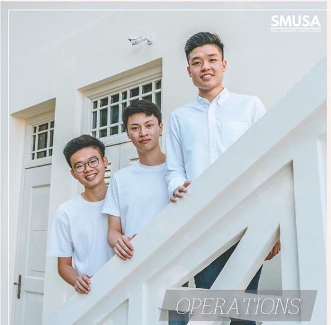

Tan Shao Zhong Alvin
Information System - Digital Business Solutioning
Singapore
alvin.tan.2018@sis.smu.edu.sg
(+65) 9645 1433
Skills
Python
PHP
Docker
MySQL
Languages
English
Chinese
• Assist in creating technical project life cycle start from requirement gathering to deployment including data pipeline product, cloud product, IT infrastructure and technical platform to achieve business goals
• Assist to prepare for database operation/expansion by studying plans and requirements; coordinating design, migration, and integration
• Analyze database resource usage, propose and plan for database/server optimization to increase server resource utilization/efficiency
• Drill with Shopee infrastructure team for Shopee databases and Shopee Cloud databases and deal with Disaster Recovery (DR) planning, setup, management
• Plan IT infrastructure for major marketing events (e.g. 11.11 sales), including planning resource, improving technical product and database performance, and coordinating stress tests
• Plan and deliver IT infrastructure (data center, server, network and etc) capacity as well as manage resources
• Maintenance and update of the website for the Centre for Marketing Excellence (CME)
• Student helper for various events organised by the office
FNCE692: Capital Resource and Management (Corporate Finance)
MKTG601: Marketing
• Teaching Assistant for Executive MBA and MBA
• Assisted in collating teaching materials
• Responded to enquiries from students
• Relayed instructions from faculty to students
• Assigned class participation scores based on quality
• Awarded "Outstanding" for Overall Conduct and Overall Performance
• Served as an EOD 2nd Sergeant, responsible for the identification, render safe and disposal of unexploded ordnance (UXO), improvised explosive devices (IED).
• Responsible for overseeing the proper maintenance and usage of highly priced EOD equipment.
• Managed the morale, welfare and readiness of a team of 6-8 men for their daily missions
• Assessed clients' financial situations to develop strategic financial planning solutions.
• Maintained confidentiality of bank records and client information.
• Maintained friendly and professional customer interactions.
3.67/4.00 (Magna Cum Laude)
Academic Award:
Lim Bock Kee Bursary
• Awarded to students who possess good academic results with active co-curricular activity and community involvement.
More information on Lim Bock Kee Bursary
3.62/4.00
• Aid in the operations of University events through the provision and maintenance of logistics.
• Review and enforce regulation of all guidelines pertaining to Operations
• Aid in the liaison between all Constituent Bodies (CBds) and Clubs and the Office of Students Life (OSL) in matters pertaining to logistics
• Aid in the oversight of strategic management and development of SMUSA’s facilities
• Assisted in Major School Events such as FE Day and SMU Open House.

• Constructed essential infrastructures for an elementary school in Vietnam, as well as improving their standard of education with a sustainable and lasting effect.
More Information on Project Enreach